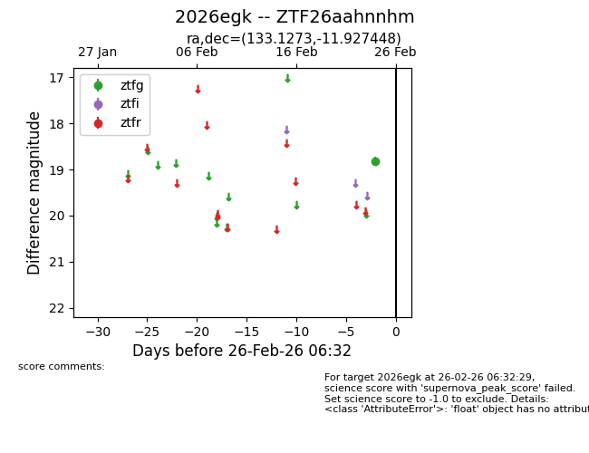
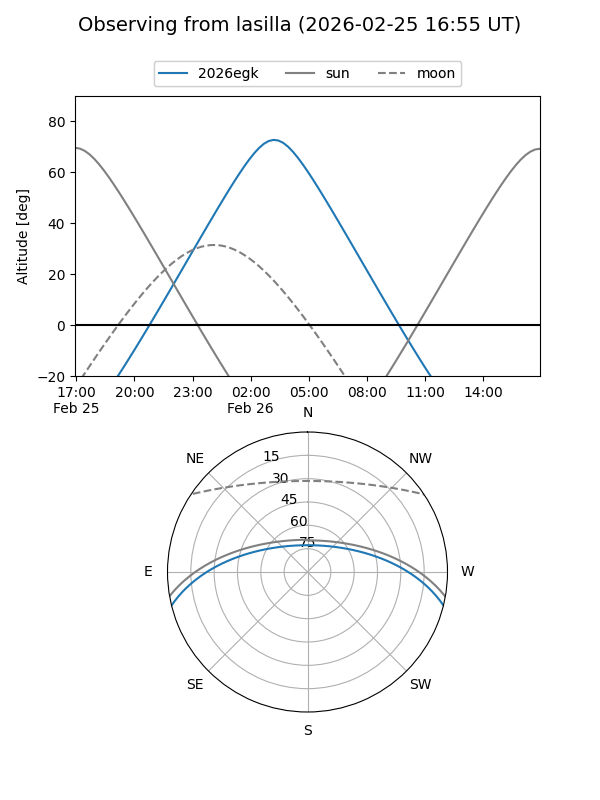
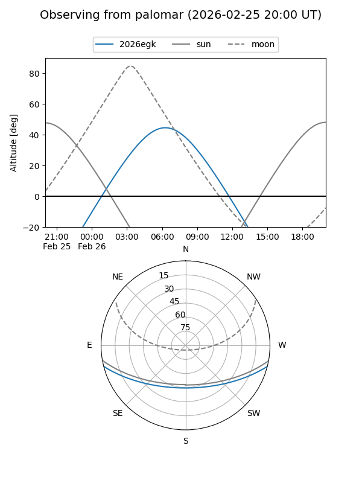

2026egk
Target 2026egk at 2026-02-26 06:33
Aliases and brokers:
FINK: link
Lasair: link
ALeRCE: link
TNS: link
YSE: link
alt names
ZTF26aahnnhm (ztf,fink_ztf)
2026egk (tns,yse)
Coordinates:
equatorial (ra, dec) = 133.1273,-11.92745
equatorial (HMS+DMS) = 08:52:30.55,-11:55:38.81
galactic (l, b) = (238.7487,+20.16148)
Flags:
Photometry:
last ztfg=18.82
1 ztfg detections
Lightcurve

Visibility


Additional plots